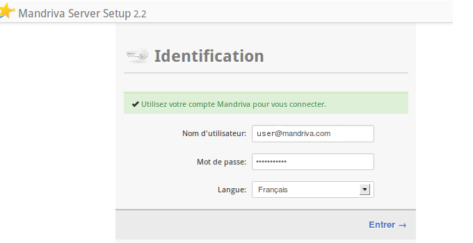
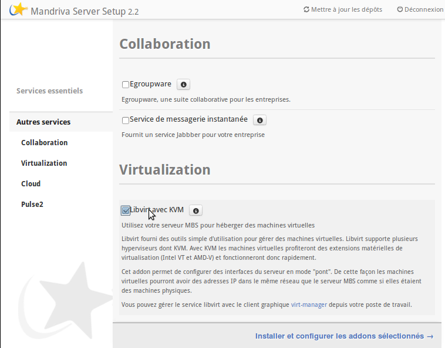
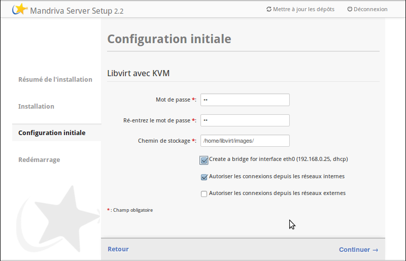
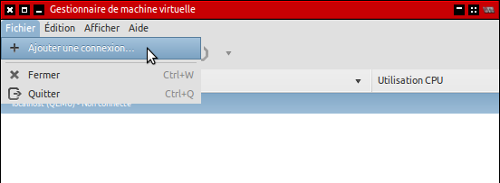
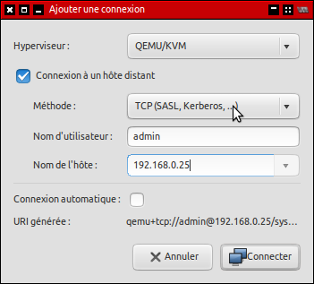
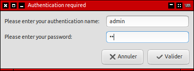
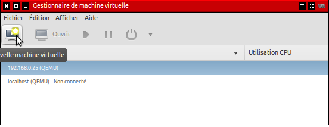
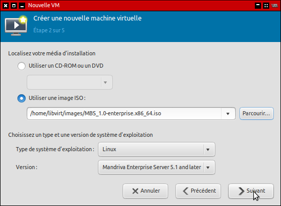

Installation de Libvirt sur MBS
Libvirt pour MBS est disponible via le Service Place de Mandriva.
Afin de l'installer, il convient de se loguer sur MSS avec votre
compte 'my'.

Rendez vous dans la section 'Autres services' et sélectionnez
'Libvirt avec KVM' puis lancez l'installation.

A l'étape de configuration :
- Sélectionnez le mot de passe désiré pour accéder à
l'hyperviseur ;
- Sélectionnez l'emplacement où seront stockés les
fichiers .iso d'installation ainsi que les disques de vos
machines virtuelles ;
- Si vous souhaitez que vos machines virtuelles accèdent
directement à votre réseau (et notamment au serveur DHCP),
cochez la case 'Créer un bridge'. Dans le cas contraire, vos
machines virtuelles seront dans un réseau isolé. Elles
pourront toujours accéder à l'extérieur au moyen d'un NAT.

Finalisez l'installation et relancez l'hote pour compléter la
configuration.

Installation de machines virtuelles
Connectez vous avec 'Virtual Manager' sur votre nouvelle
installation de libvirt.

Sélectionnez :
- Connexion à un hôte distant ;
- Méthode TCP(SASL, Kerberos...) ;
Renseignez :
- 'admin' pour le nom d'utilisateur ;
- L'adresse IP de votre installation MBS, ou son nom pour
le nom de l'hôte.

Lors de la connexion, utilisez 'admin' comme nom d'utilisateur et
renseignez le mot de passe choisit lors de la configuration dans
MSS.

Vous pouvez maintenant lancer l'installation de machines virtuelles
sur votre système MBS (apres avoir mis les .iso nécessaires à
l'installation dans le dossier adéquat).


...